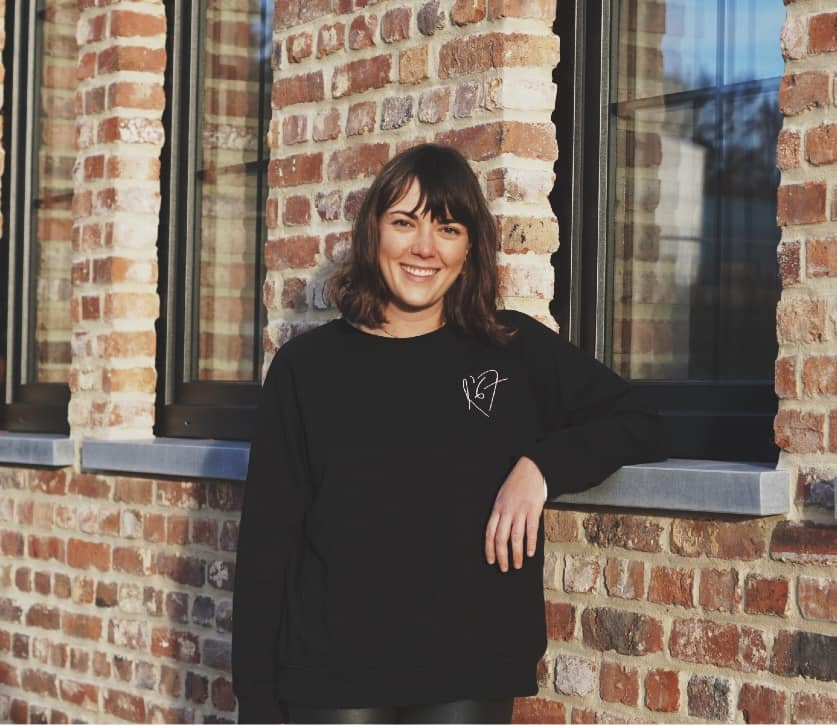

ein charmantes Café in Hergenrath, das Tradition und Moderne verbindet.
Bei uns dreht sich alles um authentische Elsässer Spezialitäten, gemütliche Atmosphäre
und ein nachhaltiges Konzept. Seit der Eröffnung haben wir es uns zur Aufgabe gemacht, regionale Zutaten mit
französischem Flair zu vereinen und Speisen anzubieten, die einfach glücklich machen.
Unser Team
Herzblut, Leidenschaft und Gastfreundschaft
Hinter L’Étable 67 stehen Menschen, die ihre Leidenschaft für gutes Essen und Gastfreundschaft teilen.
Unter der Leitung von Caroline Steffens, der Gründerin und kreativen Seele des Cafés, sorgt unser kleines, aber engagiertes Team
dafür, dass ihr euch bei uns rundum wohlfühlt.

Caroline
“Hallo! Ich bin Caroline Steffens, die Gründerin von L’Étable 67. Nach vielen lehrreichen Jahren in Straßburg
hat es mich zurück in meine Heimat Hergenrath gezogen. Mit meinem Café wollte ich einen Ort schaffen, der das Beste aus beiden
Welten vereint: französisches Flair und regionale Verbundenheit. Hier erwarten euch Elsässer Spezialitäten, die mit viel Liebe
und Nachhaltigkeit zubereitet werden. Kommt vorbei und erlebt, wie Genuss, Gemütlichkeit und Gastfreundschaft aufeinander treffen.
Ich freue mich auf euren Besuch!”
Regionalität, Nachhaltigkeit und echter Genuss – Unser Versprechen an Euch
Gemeinsam setzen wir auf Regionalität und Nachhaltigkeit, während wir mit viel Freude dafür sorgen,
dass sich jeder Gast bei uns wohlfühlt. Von der Küche bis zum Service – jeder trägt dazu bei, dass L’Étable 67 ein Ort ist,
an dem man gerne verweilt und genießt. Unser Ziel: Euch mit köstlichen Speisen zu verwöhnen und eine entspannte Atmosphäre zu schaffen.
Wir freuen uns darauf, euch bei uns zu begrüßen!
Das Lokal
Einladend, gemütlich und voller Charme – das Herz von L’Étable 67
Unsere Einrichtung verbindet modernen Stil mit rustikalem Charme, inspiriert von der Wärme und Gastlichkeit
des Elsass. Helle Holztöne, natürliche Materialien und liebevolle Details schaffen eine einladende Atmosphäre, in der ihr
euch sofort wohlfühlt.
Der offene Raum bietet gemütliche Sitzplätze für entspannte Stunden, während unsere Terrasse im Freien ein perfekter
Ort ist, um bei gutem Wetter die Spezialitäten unseres Hauses zu genießen. Egal, ob ihr allein kommt, mit Freunden oder Familie –
L’Étable 67 lädt euch ein, gemeinsam zu verweilen und den Alltag hinter euch zu lassen.
Wir haben freunde auf dem bauernhof
Um die köstlichsten und überzeugendsten Gerichte zuzubereiten, ist es für uns von entscheidender Bedeutung,
nur die allerbesten Zutaten zu verwenden, die es gibt. Wir sind bestrebt, gute Beziehungen zu lokalen Bauernhöfen und Lieferanten
aufzubauen, um sicherzustellen, dass unsere Zutaten nicht nur frisch und authentisch, sondern auch nachhaltig sind.